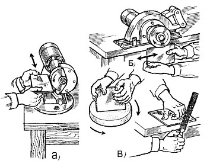

-

8(0152)31-25-61
-

kst@ggkst.by
-

http://ggkst.by
8(0152)31-25-61
kst@ggkst.by
http://ggkst.by
Карта 2: Выравнивание и подточка кромок плиток
Состав технологических операций. Удаление местных выступов и выравнивание (подтачивание)
всей поверхности кромки неполномерных и целых плиток.
Механизмы, инструменты, приспособления, инвентарь. Электрическое точило или электрическая сверлильная
машина с насадками. Шлифовальные бруски; рашпиль; молоточек плиточника или кирочка; кусачки; складной метр;
металлический угольник; контейнеры для складирования обработанных плиток; защитные очки; резиновые перчатки или рукавицы.
Материалы. Керамические плитки с кромками, требующими обработки.
Организация рабочего места. На столе-верстаке стационарно закрепляют переносное электрическое точило
или электрическую сверлильную машину для механизированной обработки кромок керамических плиток при большом объеме работ.
При небольшом объеме работ кромки плиток обрабатывают вручную, располагая на столе-верстаке с одной стороны
необходимые инструменты, а с другой - плитки, требующие обработки.
Последовательность выполнения технологический операций. Местные неровности - выступы, бугры - отламывают кусачками или плитколомом (рис. 1).
После этого выравнивают, подтачивают кромки, контролируя прямоугольность плиток угольником. При большом объеме работ используют стационарные или переносные механизмы (рис. 2, а, б). Плитку держат лицевой поверхностью вверх, а обрабатываемую кромку перпендикулярно поверхности шлифовального круга. При этом плитку удерживают неподвижно или слегка перемещают по ширине вращающегося круга до получения ровной поверхности кромки.
Рис. 1. Устранение местных искривлений на кромках плиток с помощью кусачек (а) или захватного приспособления - плитколома (б)
Рис. 2. Выравнивание (подтачивание) кромок плиток: а - на стационарном точиле, б - на переносном инструменте с шлифовальным кругом, в - вручную шлифовальным кругом или рашпилем
При небольших объемах работ кромки выравнивают шлифовальным бруском, кругом или рашпилем (рис. 2, в).
Техника безопасности. Работу выполняют в защитных очках и резиновых перчатках в помещении хорошо освещаемом,
с приточно-вытяжной или естественной вентиляцией.
К работе с электроинструментами допускаются учащиеся, прошедшие обучение и инструктаж на рабочем месте.
Контрольные вопросы. Покажите приемы, используемые при выравнивании кромок керамических плиток на стационарном и переносном точилах с насадками. В какой последовательности обрабатывают кромки неполномерных керамических плиток? Как организуют рабочее место плиточника при обработке кромок керамических плиток? Как контролируют качество обработанных керамических плиток? Зачем обрабатывают кромки неполномерных керамических плиток в облицовочных работах? Как обеспечить безопасность труда при обработке кромок керамических плиток?
Карта 3 — Резка керамических плиток